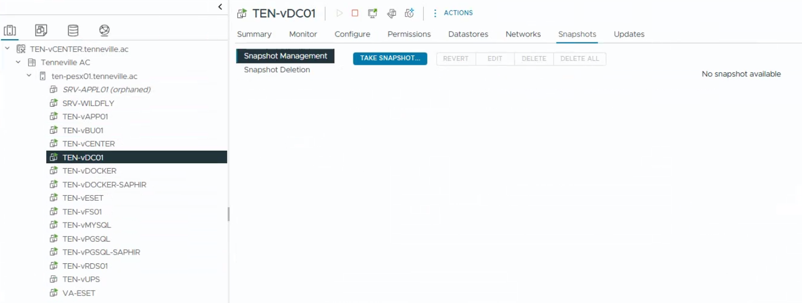

Objective
This check verifies the presence and age of virtual machine snapshots. It aims to identify outdated or unnecessary snapshots that could impact performance, storage consumption, or data integrity.
This is a verification-only control. No snapshot deletion or cleanup is performed as part of this check.
Prerequisites
- Access to vSphere Client
- Read or monitoring permissions
- Access to ESXi hosts and virtual machines
Open vSphere Client
Log in to the vSphere Web Client using a web browser. Access the vCenter instance via its IP address or FQDN.

Open Snapshots View
Log in to the vSphere Web Client, select a virtual machine, and open the Snapshots tab.
Review the list of existing snapshots for the selected VM.

Validate Snapshot Age
Ensure that no old or unexpected snapshots are present.
- No snapshots older than a few days (unless justified)
- No forgotten or abandoned snapshots
- Snapshot usage aligned with backup or maintenance operations
Extended snapshot retention should always be documented and justified.
Result Interpretation
- ✅ OK – No old or unnecessary snapshots present
- ⚠️ WARNING – Old snapshots found but justified or scheduled for cleanup
- ❌ NOK – Old snapshots present without justification